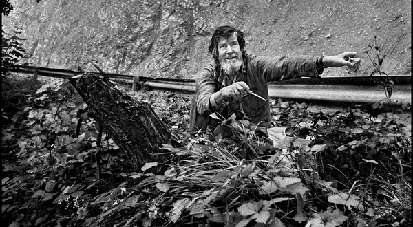
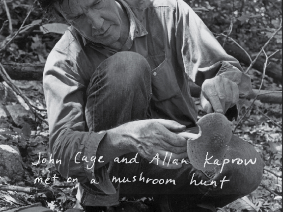
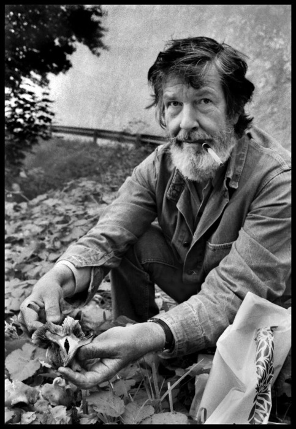
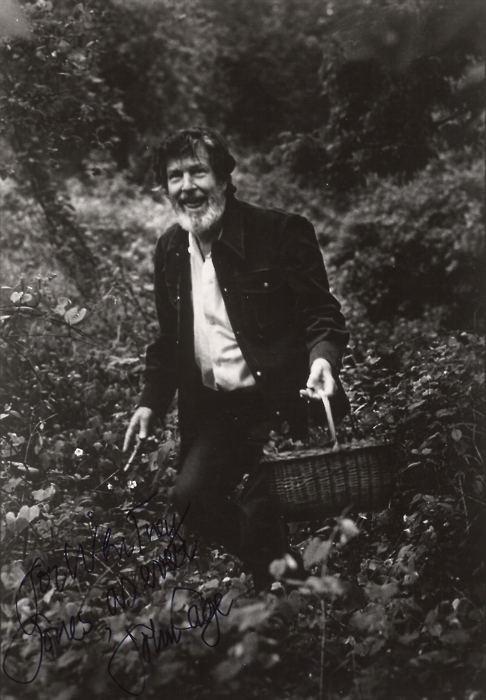
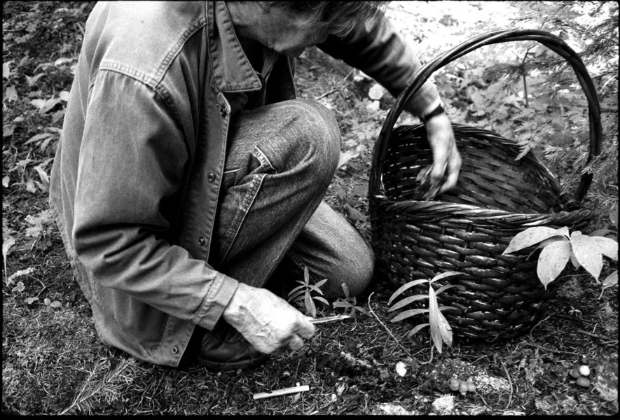

Fungi
Edible Mushrooms of the Northeast
Field Guide
Further Info
Contactable





"Enough of the contemporary musical scene; it is well known. More important is to determine what are the problems confronting the contemporary mushroom..." — John Cage, from a Music Lovers' Field Companion, 1954